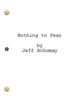

My Creative Side
Screenwriting. Game design. Visual Design. UX. Gamification. Photography. Creating with the intent to engage, inspire, & make an impact.
I've always been intrinsically creative. I use creativity to stand out. I use creativity to solve problems. I use creativity to make things more fun and more interesting.

My original way to creatively express myself was primary visual, in a number of mediums, from hand-drawn artwork, to digital art, to photography and cinematics.
After earning my degree in Film Production, I became more and more focused on storytelling, and focused my creative expression on screenwriting.
Recently, I have shifted my focus again, and now apply my creative attention to game design, and the indirect overlap of screenwriting and story in games.
One interesting aspect of having such a wide a range of interests, is that many of my disciplines overlap. This leads to unique situations to creativly use elements from one discipline in another. Another benefit is that I often have a unique perspective, and can pull back to see the "big picture" from a different angle.
I find my creativity comes in four main ways:

Inspiration. Experiencing other creative works, and constantly learning. I read a lot. The library is my friend. Often one sentence will spark an idea that has been hanging around beneath the surface for a while. Other times I'll get a glimpse of a new perspective and the inspiration hits all at once.
Travel. Getting out, moving, and being in nature always loosens up my mind. But actual traveling to new and interesting places always seems to fill my mind with all kinds of ideas that I can't wait to play with when I get back home.
Dreaming. Sometimes this means actual dreaming, but mostly it's day-dreaming. I spend a lot of time "staring into space." But inside, my mind is rapidly exploring complex worlds of branching possibilities. Something creative always falls out. The trick is keeping track of all the thoughts, and coercing them into something meaningful and worthwhile. This is where craft and flexibility comes in.
Intent. A lot of the time I just have to make myself be creative. I identify a problem that I need a creative solution to, and I just start attacking it from different angles, playing games of "what if," and let my mind follow each thread to see where it goes. Acknowledging that there is a creative solution out there makes it easier to work towards finding it.
Creative Work
Feature-length Screenplays (available by request)
"People Watching"
Noir. A struggling PI gets a break when a local millionaire hires him to follow his wife. But when the wife turns up dead, the PI is the primary suspect, and must unravel a deeper chain of crimes to prove his innocence."Still Life"
Psychological mystery. A rootless vagabond woman searching for her true identity takes shelter in an abandoned house, which awakens memories that remind her of what she has been running from her whole life."Nothing to Fear"
Horror. A traumatized woman at an exotic self-help retreat must escape from zombies that can smell fear.
Panoramic Photography

A collection of unique perspectives from my travels at home and abroad.
View galleryNumerous HTML5 mobile games currently in development
See myLudography (List of games) and development notes.
"Branding and Marketing Slideshow"
This is from quite a while ago, when my focuses were on branding, marketing, and graphic design, but it is interesting to look at still to see my (legacy) perspective on making an impact, plus it has some samples of my old work.